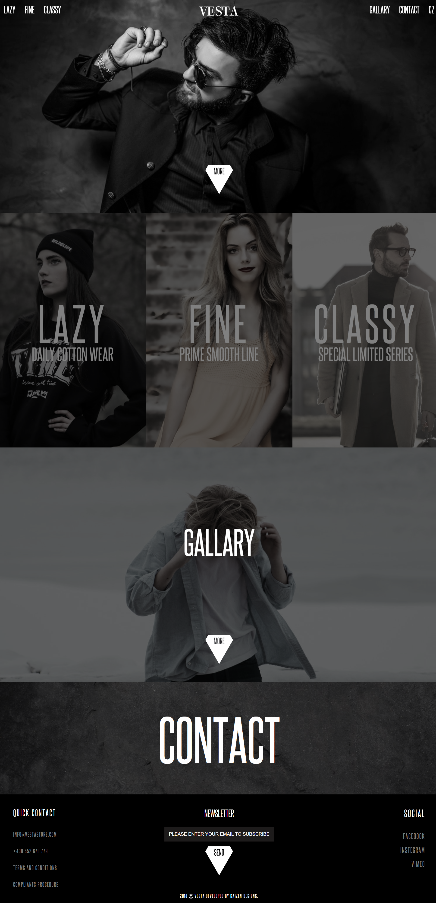
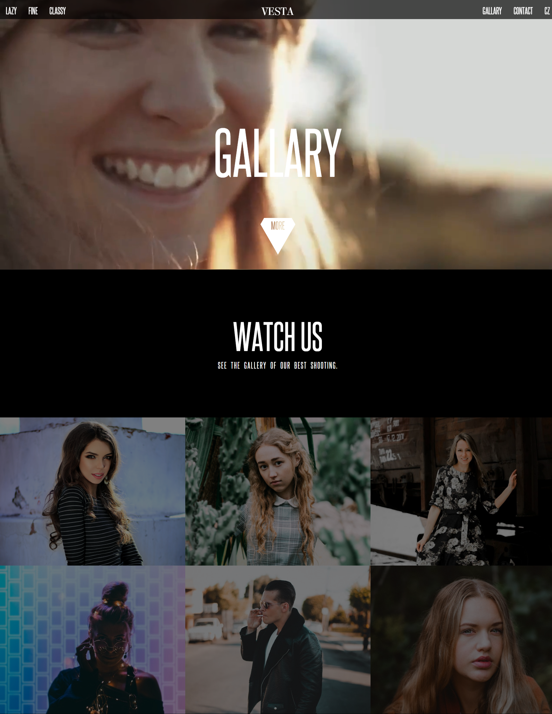
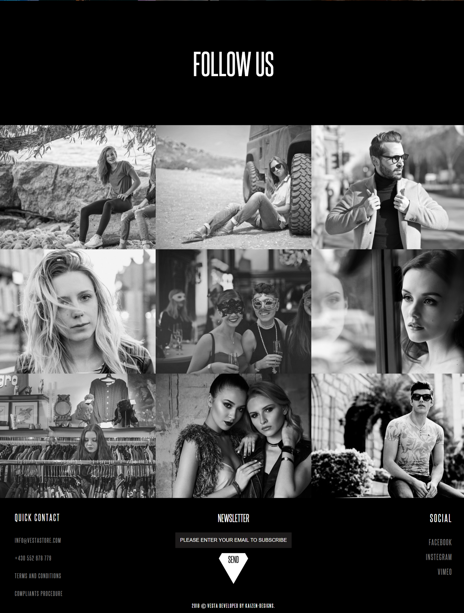

work
about
contact
VESTA
VESTA
Pushing the boundries for the clothing industry
OVERVIEW
An amazing website template that I made recently that focuses on bringing new user interference and making the user interact with the website more easily.



SEE IT ONLINE